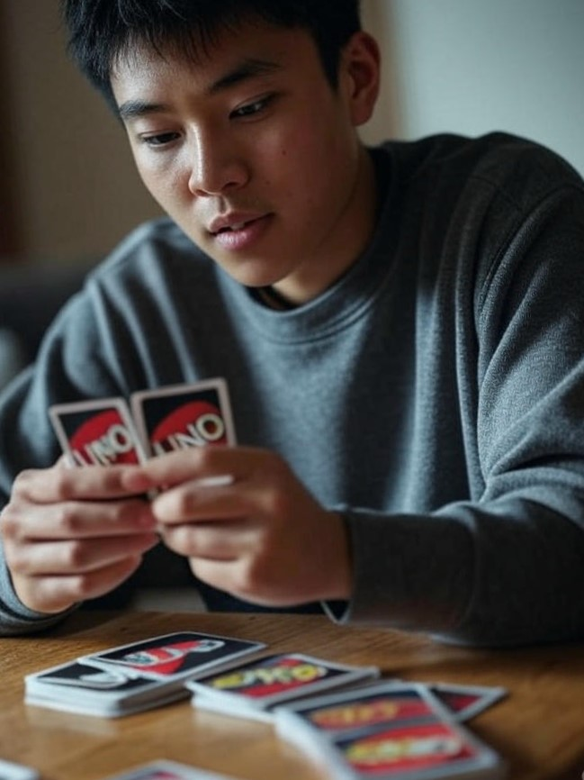
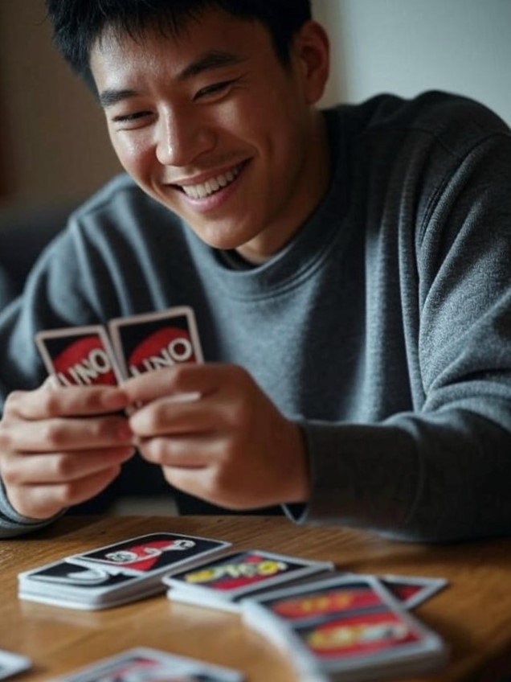

UNO Strategies
To win at UNO, it's important to pay attention to the cards that have been played and what your opponents might be holding. Try to get rid of high-point cards early, and use action cards strategically to disrupt your opponents' plans.
For more tips, visit The Gamer.
